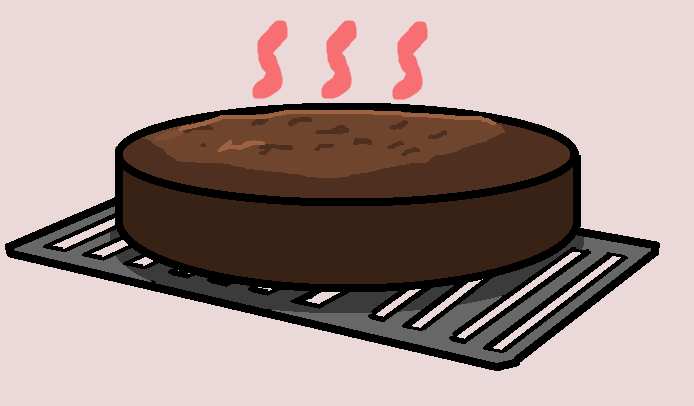

Step 2: Baking the Cake Layers
This step focuses on making the chocolate cake batter and baking the layers evenly. Traditionally you make 3 layers for this cake but the choice is optional. The cake layers are the base of the Black Forest cake, so it is important to mix the batter carefully and avoid rushing the baking process.

Mix the Dry Ingredients
In a large mixing bowl, combine the flour, sugar, cocoa powder, and baking powder. Mixing the dry ingredients first helps spread everything evenly before the wet ingredients are added.
Add the Rest of the Ingredients
Add the eggs, milk, vegetable oil, and vanilla extract into the bowl. Mix until the batter looks smooth, and try to avoid overmixing because that can make the cake layers dense instead of soft.
Pour the Batter into Pans
Divide the batter evenly between the two prepared cake pans. Try to keep the amount of batter similar in each pan so the layers bake at the same speed and stack more evenly later.
Bake the Cake Layers
Bake the cake layers at 350°F (175°C) for about 30–35 minutes. You can use the food thermometer if the center reaches around 200–210°F, then the cake is fully baked.
Helpful Tip
Let the cake layers cool completely before adding whipped cream or cherry filling. If the cake is still warm, the filling can melt and make the layers slide apart.